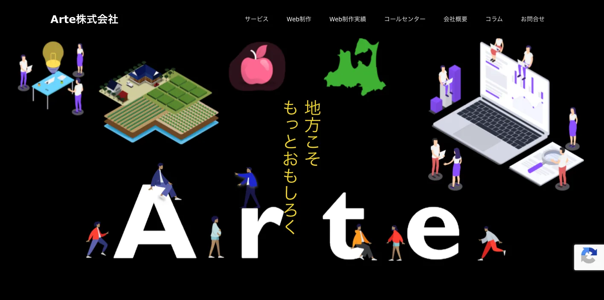
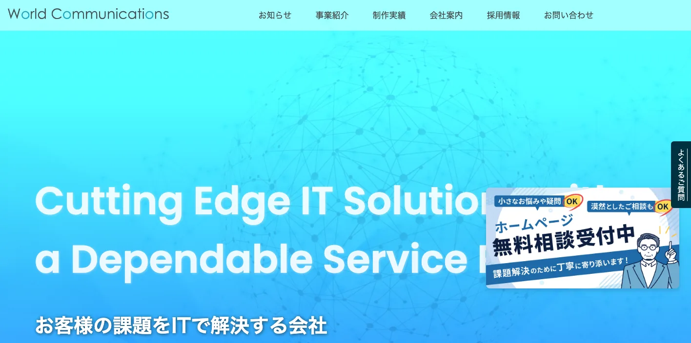
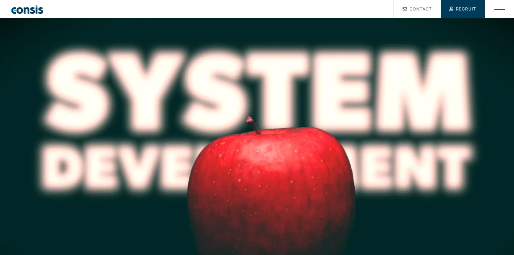
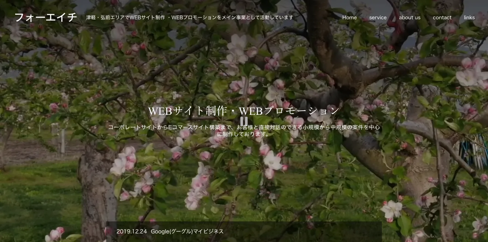
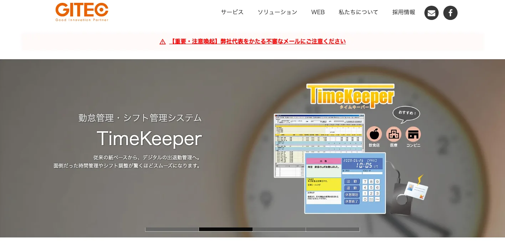
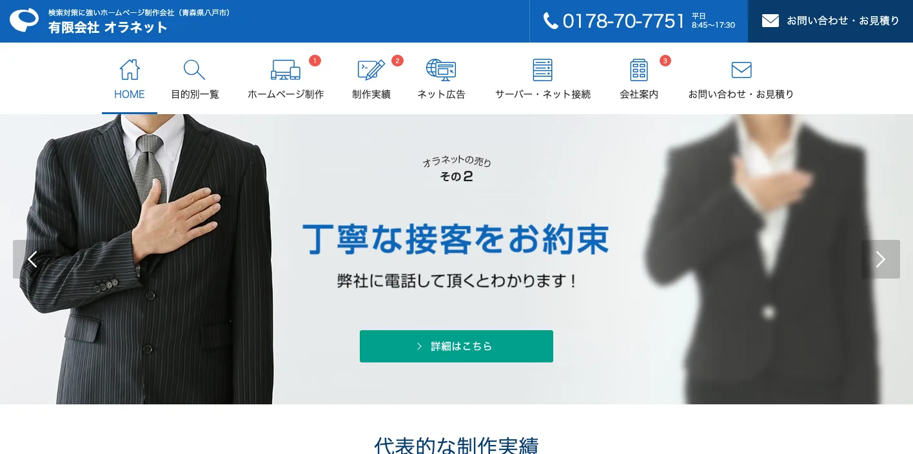
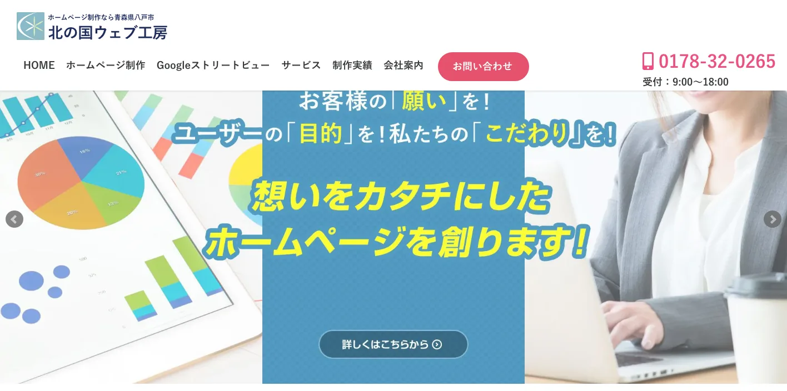
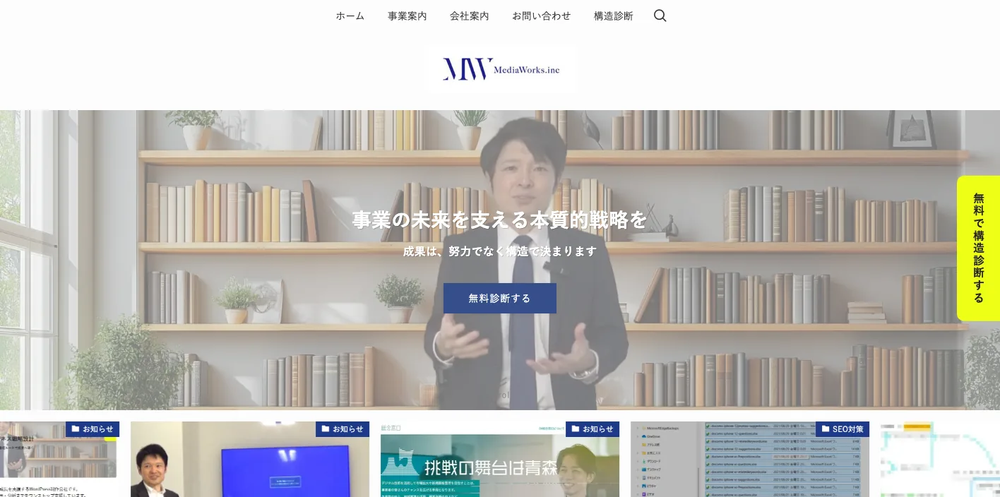
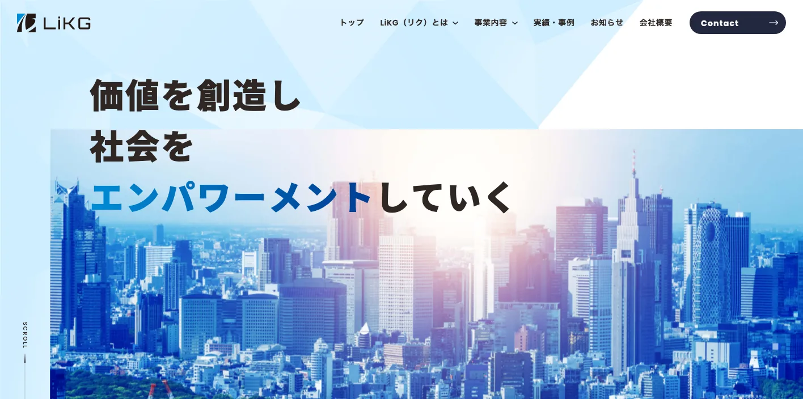

青森県でおすすめのLLMO会社10選｜費用相場と選び方もわかりやすく解説

青森県でLLMO会社を選ぶときは、単に「SEOに強そう」「ホームページを作れる」では足りません。青森市の行政・交通ハブ、弘前市の観光・りんご・津軽圏、八戸市の工業・物流・水産では、AI検索で比較される文脈がかなり違うからです。
青森県社会経済白書2025では、2025年の推計人口は114万5,475人、2024年の65歳以上人口割合は35.7％とされています。一方、「よくわかる青森県2026」では、2024年の観光入込客数は延べ3,237万8,000人、実人数推計で1,386万3,000人でした。人口減少と高齢化が進む一方で、観光回遊、りんご・野菜・水産の一次産業、港湾・空港を使う物流が強い県では、業種ごとにAIへ伝えるべき情報の型が変わります。
この記事では、青森県で比較対象にしやすいLLMO会社を10社整理し、そのあとに比較ポイント、費用相場、FAQ、まとめの順で解説します。まずはLLMO対策の基本を押さえたい方は基礎記事から、他県との違いも見たい方は北海道の比較記事や東京の比較記事もあわせて確認してみてください。現状把握から始めたい場合は無料LLMO診断も活用できます。
目次

青森県でおすすめのLLMO会社10選
今回は、青森県内に拠点があり、公開情報から支援領域を確認しやすい会社を軸に、LLMO専業の全国会社を補完的に加えて整理しました。地場の制作会社やSEO会社も含めているのは、青森県の企業にとっては、いきなりLLMO専業に依頼するより、サイト改修や情報整理から始めるほうが現実的なケースが多いからです。
青森県では、青森市・弘前市・八戸市で相談前提が変わります。観光・店舗ならローカル検索や更新導線、食品製造や水産なら一次情報の整理、医療・介護なら安心材料と対象地域の説明が重要です。選定は2026年4月23日時点の公開情報をベースにしているので、まずは自社に近い支援軸を表で確認してから各社の特徴を見ると判断しやすいです。
| 会社名 | 拠点性 | 向いている企業 | 支援の軸 |
|---|---|---|---|
| Arte株式会社 | 青森市本社 | 観光・店舗・採用の発信基盤を整えたい企業 | Web制作・SNS・Telマーケティング |
| 株式会社ワールドコミュニケーションズ | 青森市本社 | サイトと業務システムをまとめて相談したい企業 | ホームページ制作・業務システム・保守運用 |
| 株式会社コンシス | 弘前市本社 | 地域資源や自治体文脈も含めて設計したい企業 | Webコンサルティング・制作・運営 |
| 合同会社フォーエイチ | 弘前市本社 | 津軽圏の店舗・中小企業・ローカル集客型ビジネス | Web制作・Webプロモーション・MEO |
| 株式会社ジーアイテック | 八戸市本社 | 製造・教育・医療など運用実務も重い企業 | システム開発・Web制作・IT導入 |
| 有限会社オラネット | 八戸市本社 | 検索反響を重視してサイトを見直したい中小企業 | ホームページ制作・検索対策・運用支援 |
| 北の国ウェブ工房 | 八戸市拠点 | 店舗・観光・地域サービスで視覚訴求も重視したい企業 | ホームページ制作・VR・MEO |
| メディアワークス株式会社 | 八戸市本社 | SEO・SNS・ホームページを一体で進めたい企業 | Webマーケティング・SEO・SNS運用 |
| 株式会社LiKG | 全国対応 | AI検索向けの診断から記事制作まで任せたい企業 | LLMO診断・LLMO×SEO伴走 |
| 株式会社ジオコード | 全国対応 | SEOとAI最適化を実装込みで進めたい企業 | SEO・コンテンツ・AIO/LLMO |
株式会社AIMAは青森本社の会社ではありませんが、全国対応でLLMO支援を提供しています。月額5万円のLLMO支援は初期費用なし・1ヶ月単位で始められ、質問設計、記事制作、引用チェックに絞って実務を進められます。青森市・弘前市・八戸市など商圏ごとの見え方を確認したい場合は、まず無料LLMO診断から入るのがおすすめです。
1. Arte株式会社

Arte株式会社は、青森市に2018年創業のIT・情報通信事業会社で、公式サイトではホームページ制作、Web・SNS・Telマーケティングを案内しています。制作実績にも青森県下北半島の観光情報メディアなどが並んでおり、青森の魅力を発信するコンテンツ設計と集客導線をまとめて相談しやすいのが特徴です。
観光、飲食、小売、採用強化中の地域企業のように、「きれいなサイト」だけでなく発信運用や認知拡大まで見てほしい会社と相性がよいです。LLMO専業サービスを前面に出しているわけではありませんが、青森県内でまず情報発信の土台を作り直したい企業にとって有力な比較候補です。
2. 株式会社ワールドコミュニケーションズ

株式会社ワールドコミュニケーションズは、青森市に拠点を置き、1996年の創業以来、ITサポート、業務システム開発、ホームページ制作を続けている会社です。公式サイトでは、製造業、介護施設、建築、不動産、自治体など多様な業種の課題解決に寄り添ってきたと明示しており、ホームページ制作も提案から公開後の保守まで自社内で対応しています。
青森県では、採用導線、問い合わせ導線、物件情報、実務システムなど、Webと業務運用がつながる案件が少なくありません。そのため、サイトだけで終わらず、運用体制や業務フローまで含めて相談したい企業に向いています。青森市周辺だけでなく、北東北広域で動く会社にも比較しやすいタイプです。
参考：株式会社ワールドコミュニケーションズ｜ホームページ制作
3. 株式会社コンシス

株式会社コンシスは、弘前市に本社を置くWebコンサルティング会社です。公式サイトでは、青森県初のウェブコンサルティング会社として開業し、青森県内の企業・団体に限定して企画、制作、運営、保守まで一貫して支援すると案内しています。これまでに企業ウェブサイト300件以上、行政や教育機関の制作・コンサル案件150件以上の実績を公開している点も特徴です。
地域資源、観光、多言語、農業、自治体広報など、青森らしい文脈を深く理解したうえで情報設計したい案件と相性がよい会社です。LLMOでは、青森りんごや津軽塗のようなエンティティ性の強いテーマほど、地域背景や一次情報の整理が効きやすいため、コンシスのような地域密着型コンサル会社は比較候補に入れやすいです。
4. 合同会社フォーエイチ

合同会社フォーエイチは、弘前市を拠点に、津軽・弘前エリアでWebサイト制作とWebプロモーションを行っている会社です。公式サイトでは、小規模から中規模の案件を中心に、公開後の保守管理・運営やSEO対策、Googleマイビジネス登録代行やMEOまで対応すると案内しています。
津軽圏の店舗、クリニック、工務店、地域ブランドのように、ローカル検索と更新運用の両方が重要な事業者と相性がよいです。AI検索だけを単体で追うより、弘前市周辺で「まず見つけてもらう」「比較しやすい情報に直す」ことが先な会社では、フォーエイチのような地場の運用型制作会社がはまりやすいです。
5. 株式会社ジーアイテック

株式会社ジーアイテックは、八戸市に本社を置くシステム開発会社で、公式にはシステム導入、コンサルティング、ネットワーク構築に加えてホームページ制作も幅広く案内しています。制作実績には八戸工業大学第二高等学校、八戸市立市民病院、櫛引八幡宮などがあり、地域の基幹施設や実務寄りの案件を扱っている点が特徴です。
八戸エリアの製造業、教育機関、医療機関、BtoB企業のように、Webサイトの見せ方と実務運用の整合が大事な案件に向いています。単なる記事制作より、既存業務や情報システムの流れと噛み合わせながらLLMOの前提を整えたい会社には、比較しやすい相談先です。
6. 有限会社オラネット

有限会社オラネットは、八戸市のWeb制作専門会社で、会社概要ページでは2000年創業、2026年現在10名体制、ホームページは反響があってこそ意味があるという方針を明確にしています。ホームページ制作ページでも、検索対策を重視し、制作から公開後のサポートまで一貫して行うことを打ち出しています。
八戸市周辺の中小企業、医院、店舗、不動産関連など、まずは検索反響を改善したい地場事業者に向いている会社です。LLMO専業ではありませんが、AI検索で引用されやすい情報の前提には、サイトの基本設計、FAQ、検索意図に沿った見せ方が欠かせません。その土台づくりに強い会社として比較に入れやすいです。
7. 北の国ウェブ工房

北の国ウェブ工房は、八戸市を拠点に主に八戸市周辺で活動するWeb制作会社です。会社案内では、レスポンシブWebデザイン、Googleストリートビュー、パノラマVR、MEO対策、店舗アプリ、電子ブック制作などを案内しており、視覚訴求や店舗集客に強い構成を得意としています。
店舗、観光施設、地域サービス、住宅・不動産のように、写真や現地感の伝わり方が成果に直結しやすい事業と相性がよいです。AI検索では、施設の特徴、立地、見学導線、営業時間、利用方法などの整理が重要なので、地図やビジュアルを絡めた情報整備が必要な案件では比較しやすい会社です。
8. メディアワークス株式会社

メディアワークス株式会社は、八戸市に本社を置き、会社概要ページではWebマーケティングコンサルティング、SEO対策、SNS運用、ホームページ制作、地域活性化ポータルサイト事業を案内しています。八戸商工会議所認定専門家や青森県DX総合窓口登録IT企業であることも公開しており、地域の中小企業向け支援色が強い会社です。
小規模事業者や地域サービス業で、SEO、SNS、ホームページを別々に見るのではなく、需要の見極めから集客導線まで一体で進めたい会社に向いています。AI検索だけを単発で入れるより、発信テーマ、記事設計、SNS導線まで含めて整えたい事業者には比較候補になりやすいです。
9. 株式会社LiKG

株式会社LiKGは、LLMOコンサルティングを明確に打ち出している全国対応会社です。公式ページでは、LLMO診断、LLMO×SEOコンサルティング、EEAT強化記事制作まで公開しており、AI OverviewやChatGPTにおける露出状況の調査、20項目の診断、改善レポートまで含めた支援体制を案内しています。
青森県の企業でも、すでにサイトやオウンドメディアがあり、AI検索向けに何を直すべきかを診断から明確にしたい会社と相性がよいです。りんご、食品加工、製造、観光のように一次情報を持っている事業ほど、LLMO専業会社の診断と記事設計が活きやすいです。
10. 株式会社ジオコード

株式会社ジオコードは、SEO対策、コンテンツ、オウンドメディア支援に加え、AIO・LLMOなどAI最適化も案内している全国対応会社です。サービスページでは通常プラン15万円からの料金例も公開しており、戦略だけでなくコンテンツ制作や実装改善まで含めて相談しやすいのが特徴です。
青森県内でも、県外商圏を持つBtoB企業や、社内リソースが限られていて分析から実行まで外部チームに寄せたい会社に向いています。地方の中堅企業が全国比較に入っていく文脈では、SEOとAI最適化を一体で進められる会社として見ておく価値があります。
参考：株式会社ジオコード｜SEO対策・AIO・LLMOなどAI最適化も徹底支援
他地域との違いまで見たい方は、北海道の比較記事や福岡の比較記事もあわせて確認すると、青森県で何を優先すべきかが見えやすくなります。
青森県のLLMO会社を比較する際のポイント
青森県でLLMO会社を選ぶときは、「AIに詳しいか」だけでは判断しにくいです。青森県社会経済白書2025では、2025年の人口は114万5,475人、2014年から2024年までの10年間の人口増減率はマイナス11.8％、2024年の65歳以上人口割合は35.7％とされています。人口減少と高齢化が強く進む一方で、観光や一次産業、物流の存在感は大きく、業種ごとの説明責任が重い県です。
また、「よくわかる青森県2026」では2024年の観光入込客数が延べ3,237万8,000人、実人数推計で1,386万3,000人とされており、県外客や訪日外国人の流入も戻っています。同じ青森県向け施策でも、観光・小売・医療・食品加工・BtoB物流ではAIに伝えるべき情報が違います。ここでは、青森県で依頼先を比較するときに見ておきたい観点を、県の公式統計や企業公開情報をもとに整理します。
青森市・弘前市・八戸市の三極で検索意図を切り分けられるか
青森県では、県庁所在地の青森市、観光とりんご産業の弘前市、工業・物流・水産の八戸市で、ユーザーがAIに聞く内容が変わります。青森市では行政機関や生活インフラ、弘前市では観光・文化・農産物、八戸市では製造や港湾物流が前面に出やすく、同じ「県内向けページ」でも必要なFAQや比較軸が違うのが実情です。
そのため、青森県のLLMO会社を選ぶなら、県全体を一枚で説明するのではなく、ターゲット都市圏、対応地域、訪問可否、オンライン対応、拠点別の導線まで分けて設計できるかを見たほうがよいです。青森県は市場規模が大きい地域ではない分、どの商圏を狙うのかを曖昧にしたまま施策を始めると、情報設計がぼやけやすいです。
観光・祭り・宿泊の回遊導線を設計できるか
「よくわかる青森県2026」では、2024年の観光入込客数は延べ3,237万8,000人、実人数推計で1,386万3,000人でした。内訳では県外客が535万4,000人、訪日外国人が34万7,000人まで回復しており、行祭事では弘前さくらまつりが245万人、八戸三社大祭が156万5,000人、青森ねぶた祭が105万人と、都市ごとに強い観光フックがあります。
観光・宿泊・飲食のLLMOでは、「青森県旅行」だけでなく、祭り日程、アクセス、滞在エリア、温泉、レンタカー移動、子連れ可否、冬季営業など、回遊前提の比較情報が重要です。イベント単位、都市単位、季節単位でページを切り分け、FAQまで実装できる会社のほうが、AI検索でも比較候補に入りやすくなります。
りんご・野菜・水産・食品加工の一次情報を構造化できるか
青森県の強みは、観光だけではありません。青森りんご総合戦略では、青森りんごは150年の歴史を経て生産量40万トン、販売額1,000億円の日本一産地に成長したと整理されています。また、県の野菜ページでは、野菜全体の産出額が31年連続東北1位で、「ながいも」「にんにく」「ごぼう」は作付面積全国1位とされています。さらに「よくわかる青森県2026」では、2024年の海面漁業・養殖業の漁獲量・生産量は9万1,100トン、2023年の漁業産出額は503億円でした。
この領域で重要なのは、単なる会社紹介ではなく、品目、規格、収穫・出荷時期、加工体制、認証、配送条件、ロット、導入事例などの一次情報を構造化することです。青森県のBtoBや食品系サイトでは、AIが「何を、どこまで、どの条件で提供できるか」を誤読しにくい形で示せるかが特に重要です。
八戸港と青森空港を含む広域物流・商流を説明できるか
青森県は、県内物流や観光導線だけでなく、港湾・空港も強い県です。県の公表では、2024年度の青森空港利用者数は1,259,234人でした。八戸港についても、県の港湾ページで韓国・中国、北米西岸への定期コンテナ航路に加え、東京港・横浜港との国際フィーダー航路が就航し、北東北の国際物流拠点港として重要性が高まっていると説明されています。
食品加工、機械、部材、観光、採用のどれを取っても、青森県では「どこへつながる県なのか」の説明が成果に直結しやすいです。配送範囲、港湾・空港アクセス、納期感、出張対応、越境・広域対応まで含めて情報設計できる会社かどうかを見ると、BtoBや広域商圏の案件で失敗しにくくなります。
高齢化率の高さを前提に医療・介護・生活サービスを整備できるか
青森県社会経済白書2025では、2024年の65歳以上人口割合は35.7％とされています。つまり、青森県では医療、介護、福祉、生活支援の検索が、若年層中心の都市部とは違い、本人だけでなく家族や遠方居住者による代理検索も起きやすい県です。
こうした領域では、サービス一覧を並べるだけでは足りません。対象地域、受診や利用の流れ、送迎・訪問の可否、予約手順、よくある質問、更新日、監修性まで丁寧に整理し、不安を減らす説明ができる会社を選ぶべきです。YMYLに近い領域ほど、派手な訴求より正確な情報構造が効きます。
多言語・採用・更新運用まで実装できるか
青森県のサイト改善でボトルネックになりやすいのは、戦略そのものより実装と更新です。観光分野では英語ページやFAQの継続更新、食品分野では出荷情報や規格の更新、採用分野では社内の人手不足を前提にした運用設計が必要になります。2024年の訪日外国人が34万7,000人まで戻っていることを考えても、多言語導線の重要度は上がっています。
LLMO会社を比較するときは、診断や提案で終わらず、実際にページを直す、FAQを足す、英語ページを整える、採用・地域別ページを増やすところまで動けるかを確認しましょう。青森県では小さな組織ほど、ここを外部パートナーに任せられるかが成果差になります。
青森県のLLMO会社に依頼する費用相場
青森県でLLMOを外注する場合、費用はかなり幅があります。診断だけのスポット支援から、月額伴走、ホームページ改修込みの案件まで並んでいるため、単純に安い高いでは比較しにくいです。
ここで大事なのは、単に金額を見るのではなく、現状サイトの作り直しが必要なのか、AI検索向けの診断から入るのか、記事制作やFAQ追加まで含むのかで価格帯を分けて考えることです。青森県では、観光撮影、取材、多拠点ページ、ECや多言語対応の有無で工数差が出やすいので、制作範囲と運用範囲を必ず分けて確認しましょう。
| 支援タイプ | 目安 | 主な内容 |
|---|---|---|
| 診断・スポット相談 | 10万円前後〜 | 現状把握、AI検索での露出確認、初期課題の整理 |
| ライトな継続支援 | 月額5万円〜15万円 | 質問設計、小規模改善、少数ページの見直し |
| 伴走型の標準帯 | 月額15万円〜30万円前後 | 戦略設計、改善提案、コンテンツ支援、定例 |
| 制作・改修込み | 総額50万円台〜 | LP制作、サイト改修、多言語・構造改善、運用導入 |
まずは診断からなら10万円前後が入口になる
公開価格で最も分かりやすい入口は診断プランです。たとえばLiKGはLLMO診断プランを10万円から公開しており、まずは現状把握から入りたい企業にとって判断しやすい価格帯です。
青森県でも、いきなり全ページを直す前に、どの質問で出ていないのか、競合がどんな一次情報を整えているのかを確認したい会社は多いはずです。自社が観光型なのか、地域サービス型なのか、BtoB型なのかを見極める初期費用として使いやすい帯です。
参考：株式会社LiKG｜LLMOコンサルティング 料金プラン
小さく始めるなら月額5万円〜15万円帯が現実的
中小企業や店舗型ビジネスでは、最初から大きな予算をかけるより、月額の小さな改善から始めたいケースも多いです。AIMAでは月額5万円のLLMO支援を公開しており、まずは質問設計や少数ページの改善から着手したい会社にとって分かりやすい価格帯になっています。
この帯は、青森市や弘前市の店舗型ビジネス、採用ページを持つ地域企業、単一ブランドのサービスサイトで、まずは小さくAI検索対応を試したい会社に向いています。ただし、県内広域対応や記事制作本数が多い場合は、この価格だけでは足りないこともあります。
伴走支援の中心帯は月額15万円〜30万円前後
継続的に改善提案を受けながら進めるなら、月額15万円〜30万円前後が一つの目安です。ジオコードは通常プラン15万円から、LiKGはLLMO×SEOコンサルティングを30万円から公開しており、分析、改善提案、記事方針、実装相談まで含む支援がこの帯に集まりやすいです。
青森県では、観光、食品加工、採用、医療、物流で見るべき指標が違うため、単発よりも継続伴走で仮説を調整していく支援のほうが向く会社も少なくありません。特に、県内市場だけでなく県外・海外への流通や送客を狙う会社では、この帯が現実的になりやすいです。
参考：株式会社ジオコード｜SEO対策・AIO・LLMOなどAI最適化も徹底支援
参考：株式会社LiKG｜LLMOコンサルティング 料金プラン
制作や改修まで含めると総額50万円台以上を見ておく
青森県では、LLMOだけを入れるというより、ホームページの刷新、FAQ整備、撮影、採用ページ追加、商品説明の整理までまとめて必要になるケースが多いです。この場合は月額ではなく、制作費や導入費としてまとまった予算を見る必要があります。
オラネットは自社サイト規模の制作費を50万円からの目安として紹介しており、Arteも管理・更新を月額5,000円から案内しています。つまり、LLMO費用とは別に、土台となるサイト制作や保守運用の費用が乗る前提で考えたほうが実態に近いです。
青森県では取材・撮影・多拠点・ECで費用が上がりやすい
青森県の案件が都市部と違うのは、取材対象や商圏が広く、写真や現地感が重要になりやすいことです。りんごや食品加工では収穫時期や工場写真、観光では季節ごとの景観、医療や介護では設備やアクセスの説明が必要になり、文章だけでは伝わりにくいことが多いです。
さらに、県内複数拠点、EC導線、英語ページ、イベント更新が入ると、ページ数も確認項目も増えます。青森県案件は「現地情報を整理して更新し続けるコスト」が価格に乗りやすいと考えたほうがよいです。
青森市単点か県内広域かで予算の組み方を分ける
青森県のLLMO費用で最も大きい分かれ目は、青森市内や単一店舗だけを狙うのか、弘前・八戸を含む県内広域、あるいは県外商圏まで見据えるのかです。前者なら小さく始めやすい一方で、後者は対応地域や業種別ページが増えるため、どうしても費用は上がります。
迷う場合は、まず無料LLMO診断のような小さい入口で優先順位を整理し、その後に単一商圏で回すのか、最初から県内広域を設計するのかを決めると失敗しにくいです。費用は金額だけでなく、どこまでの市場を取りにいくかとセットで考えましょう。
青森県のLLMO会社に関するよくある質問
最後に、青森県の企業や店舗から出やすい疑問を整理します。比較ポイントと費用相場とは役割を分け、ここでは意思決定の直前に気になりやすい点だけを短く確認します。
青森県のLLMO会社に依頼する意味はありますか？
あります。青森県は青森市・弘前市・八戸市で商圏や検索意図が分かれ、観光、りんご、食品加工、水産、物流、医療まで業種も多様です。AI検索で自社情報がどう見つかるかを整える価値は十分あります。
県内会社でないと意味はありませんか？
必ずしも県内本社である必要はありません。重要なのは、青森県の地理や産業構造を理解し、都市圏ごとの違いや一次産業の文脈を踏まえて設計できるかです。
青森県の観光・宿泊・飲食でもLLMOは効果がありますか？
あります。祭り、桜、温泉、アクセス、価格帯、周遊、FAQを整理すると、AI検索の比較回答に入りやすくなります。特に青森県は季節性と都市ごとの違いを出すことが重要です。
青森県のりんご・野菜・水産・食品加工の会社でもLLMOは有効ですか？
有効です。取扱品目、規格、出荷時期、加工体制、認証、配送範囲などを一次情報として整理すると、法人比較や仕入れ検討の場面で理解されやすくなります。一般的な会社紹介だけでは弱い業種ほど効果が出やすいです。
青森県の医療・介護・地域サービスでもLLMOは効果がありますか？
あります。対象エリア、利用の流れ、安心材料、アクセス、予約方法を整理すると、住民や家族がAIで調べるときにも情報が伝わりやすくなります。対象地域と更新日の明確化が重要です。
SEO会社とLLMO会社は何が違いますか？
SEOは検索結果で見つけてもらう施策、LLMOはAIの回答内で引用・参照されやすくする施策です。青森県では両方をつなげて考えないと、観光回遊やBtoBの複雑な導線に対応しにくいです。
青森県のLLMO会社に依頼したら、どれくらいで成果が出ますか？
一般的には3〜6か月が目安です。短期で激変するより、ページ整備と観測を積み重ねて少しずつ変わる施策なので、継続前提で見るほうが現実的です。
青森県のLLMO会社を選ぶときは何を確認すればよいですか？
確認すべきなのは、どの都市圏や業種文脈を狙うのか、制作や更新まで任せるのか、料金に何が含まれるのかの3点です。青森県では、この3点が曖昧だと比較がぶれやすいです。
青森県でLLMO会社を選ぶなら、三都市軸と一次情報の強さから逆算しましょう
青森県のLLMOで大切なのは、青森市・弘前市・八戸市を同じ商圏として扱わないことです。観光・宿泊なら季節性と回遊導線、りんごや食品加工なら一次情報、医療・介護なら対象地域と安心材料が判断軸になります。
そのうえで、戦略だけで終わらず、ページ改修、FAQ追加、写真や図版の整理、地域別ページの作成まで動ける会社を選ぶと前に進めやすいです。比較の起点としては、北海道のLLMO会社比較や東京のLLMO会社比較を見比べると、青森県の商圏の特殊性がより分かりやすくなります。まずは無料LLMO診断やお問い合わせから、自社がどの質問文脈で見つかるべきかを整理していくのがおすすめです。